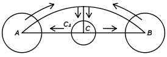

Беседа 2600 от 3877 · Беинса Дуно
Път за освобождение
Отче наш.
Имате ли тема зададена? – (Нямаме.)
„Махар Бену Аба.“
Има в живота едно голямо противоречие, което ви е наложено. Всички чувствувате едно голямо противоречие в живота си. Вие си го обяснявате по един или друг начин. Както и да го изяснявате, противоречието е противоречие. Едно противоречие може да се смекчи, може да се изправи. Противоречието съществува. В този живот вие не можете да го избегнете на земята. Щом трябва да растеш, тогаз ще има едно противоречие. Тия материали трябва да ги вземеш отнякъде. Отдето и да ги вземеш, ония хора, от които вземаш материалите, те ще бъдат или доволни, или недоволни от тебе. Ако им плащаш добре, ще бъдат доволни. Ако не им плащаш добре, няма да бъдат доволни. Съществува недоволство между най-близки. Вие не знаете как да се концентрирате. Във вашите мисли, във вашите чувства и във вашите постъпки няма единство. Например не сте изучавали вие какво нещо е животът. Казвате: „Трябва да се живее“ – Това не е философия „Трябва да се живее“. И кокошката иска, не иска, ще живее. И червеят иска, не иска, ще живее. И човек казва: „Трябва да се живее“. Има един произволен живот. Водата като слиза от едно високо място, тя иска, не иска, ще върви към морето. Не зависи от нея, от нейната добра воля. Ти казваш: „Аз така мисля“. Нищо не мислиш. Когато на един кон се е качил някой на гърба му и препуска, нима зависи от неговата добра воля? Има някой на гърба му, който го кара. Казвам: Човек трябва да се концентрира. Има някои неща, с които човек трябва да знае как да се разправя. Това знание, което днес имате, може утре да ви помогне, но това знание, което днес имате, може утре да не ви помогне. Ако вие отидете към северния полюс, тия дрехи, които сега имате, няма да ви бъдат полезни. Ще се увеличи студът. Дрехите ви са тънки и ще изгубите голяма част от своята топлина. Щом изгубите топлината, ще изгубите пластичността на своята ръка и ходът ви няма да бъде свободен. Ако отидете на екватора, дрехите, които са ви били полезни на северния полюс, няма да ви бъдат полезни там. Вие разрешавате въпросите от сегашното ваше становище, а пък вие сте пътници. Това не е идеалното място. То е едно добро място, но не е идеално място, не е място, отдето всичко можете да разрешите.
Например, вие не можете да си обясните, защо някой от вас е мъж, а пък друг е жена. И си недоволен, че сте жена! Защото не разбираш. Защо си недоволен, че си мъж? Защото пак не разбираш. И който е доволен не разбира, и който е недоволен, не разбира. И двамата не разбират. Например, какво е преимуществото на мъжа, и какво е преимуществото на жената в дадения случай? Какво е преимуществото на един вглъбнат предмет и на един изпъкнал предмет? Вземете едно огледало, което е изпъкнало и едно, което е вглъбнато. Има едно различие. По какво се различават вдлъбнатото и изпъкналото огледало? Вглъбнатите събират, а пък изпъкналите разпръскват. Мъжът, той разпръсква. Ако остане на мъжът да събере една къща! Естеството му е такова! Той разпръсква, както един човек сее. Всеки един сеяч, който дойде, хвърля, хвърля, завлича и казва: „Да става каквото ще!“ Жената дойде отподир, дойде оная с вглъбнатото огледало и казва: „Какво направи? Какво разхвърли житото? Ти направи голяма пакост!“ Той казва: „Направих пакост, но ще се оправи тая работа.“ Оная дойде и събере житото, и го тури в хамбаря, а пък мъжът дойде и го разхвърля пак на нивата. Който не разбира, ще каже, че мъжът е глупав, а жената е умна. Но ако глупавият не беше пръскал, отде щеше да жъне жената? Ако нямаше какво да жъне? Вие понякой път мислите, че сте умни. Жената минава за умна, а мъжът за глупав. И кой се бие на бойното поле? Мъжът! Понякой път и жената по подражание на мъжа и тя се бие. Мъжете когато се бият, бият се с цепеница, а пък жените с косите си – хванат се за косите си. Жената хване друга жена за косите и казва: „Ти не знаеш ли да мислиш?“ Разтърсва ѝ главата! А пък когато бие (мъжът), той бие с тояга и казва: „Ти не знаеш ли да работиш?“ Казвам сега: Вие понякой път се наказвате или по мъжки или по женски. Кое е по-хубаво, по мъжки ли да те наказват, или по женски?
Сега за концентрацията: Каква е разликата между младия и стария? Между проявата на младия и проявата на стария. Младият казва така. (Учителят си удря ръцете.) А старият казва така. (Учителят с ръката си бие главата и туря показалеца си върху челото.) Защо единият си удря ръката, а пък другият си туря показалеца на главата? Този, който уповава на ръцете си кой е? И този, който уповава на главата си, кой е? Старият винаги уповава на главата си, а пък младият – на ръцете си. Онзи, който не разбира законите ще намери едно противоречие. Питам: Една глава, която няма ръце и крака, които я носят какво ще направи? Ръката като бута тая глава, то тая глава става ценна. Да допуснем, че нямате ръце и крака. Но като няма тая глава ръце и крака, какво ще прави? Но и ръцете, и краката, когато нямат глава, която да даде направление, какво струват? Следователно, ще съберете стария и младия, главата с ръцете и краката! Старият е главата, а пък младият – ръцете и краката. Старият да мисли, а пък младият да работи.
Младият събира ли или разпръсква? Младият разпръсква. Той е всякога много щедър. Младите хора са крайно щедри. У тях има щедрост. Старият има вече качествата на една умна жена: той събира всичко наоколо. Старите хора ще ги видиш, че имат лешници, орехи, ябълки, парцали, корени. Младият даже не знае цената на парите. А пък старият знае колко струват парите. Той събира и ядене, но не знае как да яде горкият! Изпадали му са зъбите. Каквото и да яде, разваля му се стомаха, а пък на младия, каквото и да яде, всичко му е сладко. Ако вие сте изгубили смисъла на живота, вие сте остаряли. Всичко имате, но нямате доволство. Щом ядеш хубаво и стомахът ти правилно смила храната, ти ще имаш доволство.
Човек трябва да работи, но между работата и човешката мисъл и чувствувания има едно съотношение. Ти не можеш да извършиш една работа, ако не си мислил за тая работа. Ти не можеш да извършиш една работа, ако не си чувствувал. Крайното проявление на човешката воля зависи от мисълта и чувствуванията. Това, което правилно си мислил и чувствувал, ти ще дойдеш и ще намериш оная подходяща форма, с която да изразиш правилно онова знание, което имаш.
Защото целият живот на всички хора на земята е един резултат. И ако вие почнете да изследвате като учени хора под микроскопа, ако вие бихте изследвали физическия живот под микроскоп, щяхте да разберете много работи. Някой път питат: „Защо съм дошъл на земята?“ Че това трябваше да го знаете! Как така, дошли сте на земята и не знаете защо сте дошли! Че то ще бъде смешно да си в едно училище и да питаш защо си в училището. Все таки, все имаш една определена цел като влезеш в училището. Ако си в отделенията, предметът ще бъде изучаването на азбуката. Четиритях години ще бъдат за азбуката, слоговете и думите. После ще влезеш в гимназията. Гимназията аз наричам Учение на сърцето, а пък щом влезеш в университета, там е учението на ума. Отделенията – това е физическия свят, гимназията е светът на сърцето, а пък университетът е на ума. На ума е, понеже е висок свят. Всички не могат да свършат университет, но всички свършват отделения. За отделенията всички имат възможност. Някой път хората мислят, че са много умни. Имат много факти събрани. Някой казва: „Аз имам усет“. Ти може да имаш един усет разхвърлян. Може да имаш едно чувство, което може да е вярно, а може и да не е вярно. Големите работи за да ги разберете, трябва да ги смалим. А пък малките за да ги разбереш, трябва да ги увеличиш.

Представете си, че вие сега се намирате в един свят: Имате света „A“, този е физическият свят (Фиг. 1). А „В“ е духовният свят. Този, духовния свят го наблюдават под микроскоп. Виждате една малка точка тук, една точка под микроскопа, нещо се движи. И после виждате, че тази точка се разделя на две части. Това е само за изяснение. Нещата както стават в природата, стават по друг начин. Едната клетка тръгва към направление A, а пък другата към B от точката C, по две противоложни направления. Едната част се привлича от A, а пък другата част се привлича от B. Половината влиза във физическия свят A, другата половина влиза в духовния свят B. Да кажем, че физическия свят е A, а пък духовния – B. След като влезат, забелязва се, че тази половина започва да расте, уголемява се. Но след като се развие, забелязва се, че отива нагоре; след като седят дълго време, едната във физическото поле, пък другата в духовното поле, веднага двете части отиват по една крива линия нагоре, докато дойдат до средата и след това перпендикулярно слизат надолу в този център, от който са излезли. Тези две точки от центъра C по права линия се привличат от духовния и физическия свят и след това по една крива линия се връщат в C. Идват на същото място. Тези две половинки се събират в едно кълбо. Това е умственият свят C. Какво ги накарало да се разделят и какво ги накарало да се съберат? Тази клетка беше еднообразна. Всички сили бяха само положителни и затова се раздели на две части.
Една сестра беше положителна, а другата отрицателна и се търсят пак. Стана една смяна вътре. Еднообразието в живота произвежда противоречие, а пък разнообразието в живота произвежда хармония в природата. Най-първо е бил мъжът. Къде беше жената. Вие не сте мислили, не сте размишлявали. Къде е вашия микроскоп? Вие сега ще разсъждавате както сте чели по книгите. В това, което сте чели по книгите има нещо верно. Нещата в книгите не са представени така, както трябва да се представят. Не че онези, които са ги представили са искали да лъжат. Ни най-малко. Но зависи откъде фотографираш един предмет. Ако го фотографираш отблизо, ще имаш една представа, а пък ако го фотографираш отдалеч – друга представа. Някой път вие изучавате човека отблизо, а пък някой път отдалече. Отблизо имате една представа, а пък отдалеч – друга. Кое е по-близо заради вас? Кое седи най-близо? – Мисловият свят ли, или духовният, или физическият. Кой е по-близо? Сега дръжте си мнението, не искам да си кажете мнението, понеже ако си кажете мнението, едно мнение е в разрез с друго. Вие още не знаете кой е реалният свят. Ти чувствуваш в себе си един свят. Кой е светът, който чувствуваш? Детето е недоволно от баща си и майка си. В кой свят е? Щом си недоволен, умът е вече почнал да работи. Противоречието вече произтича от ума. Недоволен си. Сравняваш две неща, в тебе има две желания; има една мисъл, а пък две желания. Следователно, ако имате един мъж и две жени, какво ще стане с мъжа? На мъжа ще бъде добре, а пък на жените няма да им бъде много добре. На мъжа ще му бъде много добре: две жени, две слугини. Но на жените няма да бъде добре. И обратното е верно. Ако една жена има двама слуги, то на слугите няма да бъде добре. Сега това привидно е така. Вие още не знаете. Казвате: „Един човек е мъж, един човек е жена“. Но това са още идеи. Вие не знаете какво нещо е жената. Коя е отличителната черта на мъжа и коя е отличителната черта на жената? На земята както сега се проявяват, отличителната черта на мъжа е, че той е малко по-силен. Лъвът има голяма грива, а пък на лъвицата каква е гривата? Има едно различие. Вземете един пуяк – мъжкият има голям гребен отдолу, има гердан, а пък пуйката е малко по-малка. Вземете врабчетата, насекомите – навсякъде женската форма и мъжката се отличават. Ако не разбирате живота, ако не сте го проучвали, вие ще намерите едно различие, но не знаете причините защо, от какво произтичат различията в света. Сега запример, има някой резултат. В този живот вие сте недоволни от себе си. Да кажем, че една жена е недоволна, че тя е жена. Да кажем, че мъжът е недоволен, че е мъж. Тогаз след време жената ще намери смисъла на своя живот и ще го изправи, и става доволна. А пък мъжът изгубва смисъла на своя живот и става недоволен. И стане жена. Той е недоволен от това, че е мъж. Оре нивите, бие се; мъжът ще бъде чук, брадва и пр. Дето той мине все разрушава. Това, което разрушава е мъж. Той отдето мине, всичко чупи, нищо не гради. Там, дето има разрушение в природата, това е мъжът; пък дето има градеж, това е жената. Тя обича да гради. Това отчасти е вярно. Ако нямаше това, което руши, то не може да се гради. Импулсът на жената да гради е създаден от мъжа. А пък импулсът за разрушение у мъжа, го е създала жената. Мъжът е станал лош по причина на жената; жената е станала добра по причина на мъжа.
Вие под микроскопа отдолу не сте наблюдавали този свят. Вие сте чели една книга, гледали сте картини, които не са верни. Но вие не сте ги гледали под микроскоп. Цял един процес на деление на клетката може да наблюдавате под микроскопа. Но това още нищо не значи. Тази клетка се изменява още по-нататък. В този случай от тези две сили, едната се превърнала на положителна сила, а пък другата на отрицателна. И се събират тогаз. И това събиране се нарича Любов в света. Но това разделяне става още в първичния свят. Това разделяне на клетката не става на земята. Тук на земята е само отражение. Ако виждате, че се създава една сянка, тя се създава по причина на реалността, по причина на дървото, което е израстнало. Но това дърво е снето отнякъде. Формата се образувала на земята, но не се зачева тук. Вие идете от едно далечно минало, от една епоха, която сте забравили, когато сте били на Сатурн, после на Месечината и след това сте слезли на Земята. Вие сте забравили тоя процес, какви са били условията, когато сте живяли на Сатурн и на Месечината. Какви са били условията, когато сте били на Месечината. И след като се преместите от земята в друг един свят, какви ще бъдат вашите понятия тогаз. Да оставим сега това. Ако нямате концентрация, ако не разбирате, вие ще се намерите в положението на младата мома. Преди да се ожени, тя си фантазира един свят с палати, шадравани, копринени дрехи, с пръстени, корони и пр., какво ли не. А пък като се ожени, ще кажете като онзи реформатор, англичанин Джон Веслей, който казал: „Не си струва човек да се жени“. Дошъл един негов ученик при него и Джон Веслей му казал тия думи, известно време след оженването.
Аз не искам да ви карам да не се жените, или да се жените. На Джон Веслей не му било съдено да се жени. А пък той като всичките хора се оженил и после видял, че не струва да се жени. Неговата възлюблена била като Ксантипа. Някои обвиняват, че Ксантипа била лоша жена. Тя ни най-малко не е била така лоша, както ни я представляват. Този Сократ философията си дължи на своята жена. Сократ имал доста хубава глава, но носът му бил лош. – Той бил човек на чувствата. Обичал много жените и водил разпуснат живот. Имал много любовници. Историята това замълчава, той имал доста любовници. Че какво има лошо от това, да има любовници. Вие сте турили на това един друг смисъл. Че ако обичаш едно семе и го поставиш в земята, какво лошо има в това. Този, който обичал семената какво зло е направил? Няма никакво зло. Но ако почне тия дървета да ги сече и гори и прави от тях каквото иска, тогава злото е там. Злото не седи в Любовта, но злото седи в безлюбието, което минава за Любов. Някои ти казал, че те обича, а пък лъже. Там е злото. Някой на земята пита едного: „Ти обичаш ли ме?“ Другият казва: „Малко те обичам“. В света не може да кажеш много или малко. Малкото е относително и многото е относително. Ние имаме едно криво понятие за Любовта. Понеже я прекарваме през една малка цев и излиза малко вода. И казваме: „Малко те обичам“. Туриш голяма цев. Зад нея има толкоз Любов, че можеш да караш воденица, но причините са дето не се проявяват нашите разбирания и нашите възгледи.
Да дойдем сега до концентрацията. Любовта винаги концентрира човека, тя го кара да размишлява, тя го заставлява за това. А пък безлюбието (е), което разсейва човека. Щом дойде безлюбието, човек е недоволен. То е състезание между двама за един предмет. Щом спориш в себе си дали да направиш нещо или не, тогаз си раздвоен, недоволен. Идваме до раздвоението: света ли да обичаме повече или Бога. И казваме – има голямо преимущество в света. А пък да обичаш Бога е свързано понякой път с големи страдания. Но и в Любовта към света има големи страдания. Като изследваме страданията те се различава и повидимому, като че в Любовта към света най-първо като се приближаваме страданията не идват отначало, идат в края. А пък като се приближаваме към Бога, страданията идат отначало, а пък Любовта, благостите идат отпосле. Следователно, ние имаме два противоположни възгледа и мислим затова, че в света е по-добре. Ако ти си от умните хора ще живееш в света, докато дойде слънцето ти горе до зенита. Като дойдеш до зенита, тогаз ще напуснеш този свят и ще отидеш при Бога и пак ще бъде изгрев в духовния свят. И тогаз ще бъдеш щастлив. Но ако чакаш да видиш завършването на земния живот, аз ще ти кажа какво ще стане с тебе. Вие ще знаете какви ще бъдат резултатите за всеки един от вас, по отношение на това, което имате сега.
Всички трябва да имате едно концентриране, но трябва да имате един предмет, към който да се концентрирате, една определена идея трябва да имате. И върху тази идея, която трябва да имате, вие трябва да имате един възглед. Ти не може да мислиш за Бога, че Той може да постъпва както хората постъпват. Щом мислиш така, ти ще бъдеш недоволен и неспокоен. Ще кажеш: „Няма да ме слуша Господ“. Ако искаш да стане твоята воля, Бог няма да те послуша. Ако искаш да стане Неговата воля, Той ще те послуша. Вие ще кажете тогаз: „Човек трябва да стане автомат“. Ти казваш: „Ако върши чуждата воля, трябва да стане автомат“. Автомат си щом не разсъждаваш. Щом разсъждаваш, не си. Имай желание да бъдеш свободен. Това е една идея на Бога. Това, че ти искаш да учиш, да прогресираш в най-хубавото, това е потик на Божественото. А пък когато искаш твоето да стане, ти спъваш своя прогрес. Отрицателната страна на живота човек сам си я създава. Той се спира на Божествените заложби, които има и казва: „Да изпълня ли Божественото или човешкото?“. Изпълни Божественото и ще се изпълни човешкото. Ако изпълниш най-първо човешкото в себе си, ще имаш страдания и после ще дойде радостта. А пък ако изпълниш Божественото в началото ще имаш радост и в края радост. В човешкото една страна е тъмнина, а пък другата светлина.
Та сега да се повърнем към това същественото. Това е една философия. Наблюдавайте това, което става. Да допуснем, че аз ви говоря на вас и искате да знаете говоря ли Истината или не. Истината не може да се говори. Един факт може да се констатира, да се каже, но Истината се живее. Ти трябва да влезеш в света на Истината. Ти казваш: „Докажи ми Истината“. Истината не се доказва. Това, което доказвате е лъжа. Само лъжата може да се доказва. Истината не се нуждае от никакви доказателства. Там, дето се казва, че има Господ, че там е лъжата. Какво ще доказваш. Ти искаш да разсъждаваш върху причините и действието, казваш, че имало причини някъде. Че кога е било в света, когато да не е имало причини и действия? И де са причините, от които ти съдиш? Ти виждаш само сенките на нещата. Къде ще намериш тогаз Господа по сенките? Една жена къде ще намери мъжа? Тя мисли, че има един мъж и го хванала за ръката. Никакъв мъж! Това е една лъжлива идея. Хванала е тя и мисли, че има мъж. Много се лъже. В литературата има много примери, дето жени за жени са се оженвали. Тогаз вие имате криво понятие какво нещо е женитбата. Това не е изчистена идея. Казваш: „Това е един факт“. И това е истина. Казвате: „Това е свобода, това е широчина на идеите“. Но по какво се отличава свободата? Свободата е да действуваш, да правиш каквото искаш. Тогаз си свободен. Казваш: „Аз вървя по пътя на Истината.“ В свободата ти може да правиш каквото искаш, а пък при Истината имаш направление. Истината показва пътя, по който трябва да вървиш. Истинският път на живота. В Истината ти не може да имаш едно или друго понятие за нещата. Как излезе жената? Откъде излезе жената? Жената излезе отвътре, от самия човек. Сега това е в стълкновение със сегашните ваши възгледи. Ние сме в едно постоянно стълкновение с онова, което знаем. Това, което знаем е отчасти вярно, но то трябва да бъде в съгласие. Ние отиваме към някои предмети, които по-напред не са били ясни и после стават ясни. А пък тези, които са били ясни, те ще изгубят своя смисъл. Най-първо вие се интересувате от вашето детинство. Като възмъжеете не ви интересува детинството. После, като станете стар, вие се стремите към старостта. Но пак сте недоволни от старостта. Какво иде след старостта? Ти трябва да бъдеш млад, трябва да бъдеш стар между двата полюса и те да се съединят, за да намерят смисъла на живота. Ако не разбираш Мъдростта и старостта, ти не може да разбереш Истината.
Та казвам: Вие сега се спирате и казвате: „Защо съм дошъл на земята?“ Казваш: „Трябва да вярвам в Бога“. Трябва да се концентрира умът ти в нещо. Имате ли в ума си една идея, на която всякога да разчитате? Нещастието на човека произтича винаги от онзи факт, че той изгубва своето равновесие. Щом го изгубиш, тогаз ще паднеш. Трябва да имаш нещо, една основна идея, която да пази твоето равновесие. Накъдето и да се наклоняваш, като един кораб в морето, все трябва да имаш нещо, от което да са съградени твоите идеи. (Учителят посочва чертежа.) Кое е накарало тия две точки да се съберат? И кое ги накарало да се разединят? Кое ви заставлява вие да отидете на училище? Искате ли да идете? Кое ви заставлява да отидете в църква? Кое ви заставлява да седнете или да отидете в някоя гостилница? Има една подбудителна причина. Ние казваме: „Глад“. Какво е гладът? От какво произтича гладът? Да оставим сега и произхода на глада, да го приемем като един факт, който трябва да се обясни. Та казвам: Сегашните ваши разбирания, вие всички някой път говорите неща, които не разбирате. И сте недоволни от себе си и от ближните си. Ако разбирахте нещата както трябва, вие всякога можете да бъдете в състояние да изправите всяка една погрешка. Вземете един голям музикант. Като му дадат едно парче, той веднага ще види погрешката и знае да я поправи. А пък онзи, другият, който не разбира от музика, ще каже само: „Не е хубава тази песен“. А музикантът, като изпеят песента знае къде е тя хубава и къде е лоша. И ние казваме, че тези работи са лоши, но не знаем как да ги изправим. Ние нямаме концентрация. Не знаем нещата тъй както трябва. Нямаме разбиране.
Та казвам: При сегашното ваше състояние, ако дойде един да ви проповядва, той ще каже: „Остави тези възгледи, които сега имаш“. Той разбира, че трябва да се откажеш от един възглед. Това са като препарирани стъкълца, имаш малък препарат, гледаш го под микроскопа. Щом отмахнеш едно стъкълце, ще туриш второ, трето. Да кажем, че имате един грамофон. Имате доста пиеси от някои видни автори. Туриш една плоча, изсвириш я. Ако извадиш едната плоча от нейния въртеж, най-малко това не показва, че не я обичаш. Но в дадения случай изучавате нещата. И когато ги изучаме трябва да ги сменяме. Някой казва: „Този човек не мисли като мене“. Няма нищо от това, че той не мисли като вас или че в даден случай не може да чувствува като вас. Един млад момък не може да чувствува като стария и старият не може да чувствува като младия. Но в това няма никакво противоречие. Това е само обстановка. Единият е на северния полюс. Там е студено. Той има дебели дрехи. А пък другият е на екватора и има тънки дрехи. Единият ще харчи повече. Той трябва да има една къща масивно направена, с добро отопление вътре, а другият ще има къща по-слаба. Та когато дойдат лошите условия на какво се дължат те? Те се дължат на онова вътрешно неразбиране. Ние сме нещастни, понеже обичаме лекия живот, живот без мъчнотии. И тогаз именно природата ни дава най-големи изпитания. Когато ние се откажем да работим, тогава идат те. Природата иска да ни застави да мислим, да чувствуваме и да действуваме. Три неща изисква. Да имаме нещо, на което да разчитаме. И като дойде гледа какво сме направили. Това е на физическия свят. После гледа съдържанието на онова, което сте направили, развалили (ли) сте неговият вътрешен смисъл. Разбрали ли сте идеята на онова, което сте направили.
Как ще познаете дали някой ви обича или не? Много лесно. Опечете една кокошка хубаво, турете я на масата и онзи, когото искате да опитате дали ви обича, кажете му да раздели кокошката на трима души. И той като раздели кокошката, ще знаете дали ви обича, ще знаете кого обича повече. Когото обича, нему ще даде най-хубавото, бялото месце. Ако бъде супа, непременно на онзи, когото обича ще тури повече масълце в неговата паница и ще видите, че във физическия свят онзи, който е обичан има повече масълце в паницата си, а онзи, който не е обичан, по-малко. Онзи, когото обичат ще бъде по-добре облечен. Една райска птица е по-добре облечена. А пък онзи, който не е добре облечен, не е толкоз обичан. Онзи, който има отличен ум, е повече обичан. Онзи, който има по-добро сърце е повече обичан. Онзи, който има по-добро физическо тяло, е повече обичан. А пък който има хилаво физическо тяло, по-слаб ум, и по-слаби чувства, той е по-малко обичан. Сега защо е така? Защото не може да бъде другояче. Но това не е доказателство. Вие ако разбирате, едно хилаво тяло може да го направите най-доброто тяло. И ако разбирате едно ваше сърце може да го направите най-доброто сърце. И ако разбирате един лош ум, може да го направите един добър ум. И ако не разбирате най-доброто тяло, най-добрият ум и сърце, може да ги развалите. Коя е причината тогаз? И тогаз Господ против когото се възмущавате това сте вие. Този Господ, който разваля нещата това сте вие. Защо е така, ще кажете? Защото този Господ не мисли. И хората за да се избавят от това, турят дявола, едно същество дявол, което постоянно вреди. Човек при това разбиране той самият е дявол. И той сам е и ангел. Когато поправя своя ум, той е ангел; когато разваля своя ум, той е дявол. Когато оправя своето сърце, той е ангел; когато разваля своето сърце, той е дявол. Когато поправя своето тяло, той е ангел, когато разваля своето тяло, той е дявол.
Вие сега имате една идея за дявола. Че отде накъде вие приемате дявола? Вие срещали ли сте тоя дявол? Толкоз пъти говорите за дявола. Вие с дявола сте запознати, понеже вие сте дявола. И с ангелите сте запознати, понеже вие сте ангел. Но отчасти е вярно това. Кое е онова, което може да ме подбуди да бъда аз лош? Кое е онова, което може да ме подбуди да бъда аз добър? И спрямо някои хора мога да бъда лош, а спрямо някои хора да бъда добър. Има подбудителни причини. Коя е основната причина? Някой път имам желание да уча. А пък някой път не искам да се уча. Някой път искам да пея, а пък някой път не искам да пея. Някой път искам да рисувам, а пък някой път не искам да рисувам. Основната причина на всички неща е духът. Първият резултат на духа в света, първият резултат в света, с който започва животът, това е Любовта. А пък резултатът на Любовта е животът и на земята. Животът, който имаме, това е един резултат. Сега ние сме недоволни от този резултат. Тогаз се явява раздвоение, явяват се тъмнината и светлината. Това е влизане в мисловия свят. Имаме знание да различаваме. Животът сам по себе си е създал светлината и тъмнината. Светлината се явява като един резултат на живота в нас. А пък знанието е резултат на тази светлина. Каквото е разкрила тая светлина. Онова събраното знание е резултат на светлината. А пък с онова, което сме разбрали, влизаме в света на Истината, за да можем да го използуваме. Онова, което сте придобили в живота, вие може да го използувате в света на Истината. Следователно, Истината използува резултатите на Любовта и резултатите на умствения свят. И само в Истината човек може да разбере смисъла на живота. Там може да го разбере, понеже тогаз той е свободен. В Любовта ти ще служиш в началото на живота, а пък в Истината, ще бъде края на твоя живот. Но вие за началото и за края на живота имате криви понятия. Вие мислите, че условията се свършват в края на живота. Не, в края на живота ще престанете с глупавите опити. Какво означава началото на една война или края на една война? Кое е по-хубаво: началото или края на една война? Края на живота какво означава? Едно сравнение: Началото или краят на една война ще ползува? В началото ли да те бият или в края да те бият, кое е по-хубаво? (В края да има мир.) Оставете този мир настрана. Мирът, това е една отвлечена идея. Не ти се слагат тояги, не те бият вече, престават да те бият. И това състояние вече ти е приятно. Онзи, който ме бил, той ми дал нещо. Той казва: „Искаш ли още?“ Казвам: Стига толкоз. След като престават да ме бият, аз тази енергия трябва да я обработя. Който разбира прави така. В света няма безполезни работи. Когато не разбирате нещо, има бой. А пък когато ги разбираш, тогаз не е бой. Вие сега се намирате на една фалшива основа. Аз като ви говоря, вие казвате: „Какви ще бъдат заключенията?“ Дали моите заключения ще бъдат верни според както вие мислите или не? В дадения случай това, за което аз разсъждавам, не го вземам за авторитет, нито пък е авторитет онова, което вие мислите. Да допуснем, че аз пея една песен. Сега песента ще зависи от моето състояние. Най-първо ще зависи от това, какво е времето отвън. И после, ще зависи какво е моето състояние, моето разположение. Ако ви обичам, ще запея добре, а пък ако не ви обичам, ще запея горе-долу, ще кресна. А пък ако аз ви обичам, ще пея песента така хубаво, че да ме помните. А пък ако не ви обичам, ще кажа: Нека да платят за пеенето, и после да ме критикуват колкото искат. Ние не трябва да разглеждаме дали природата е в съгласие с нас или не. Или дали ние сме съгласни с природата или не. В природата съществува едно право. Онова, което аз правя и онова, което природата прави да е разумно. То е сравнение. И във всичко, което тя прави, тя е права. И тя прави всичките неща с най-малките разноски и с най-малките страдания. И тя не може да избегне страданията, но по възможност се стреми да направи нещата с най-малките страдания. И ако я попиташ, тя ще каже: „Без страдания не може“. И ако попиташ: „Защо са тези страдания?“, тя ще каже: „Без страдания не може“. И ако попиташ: „Защо са тези страдания?“, тя ще ти каже: „Направи един свят без страдания и аз съм първата, която ще гледам как ще направиш един свят без страдания“. Кажете ми как ще направите един свят без страдания? Защо се съмнявате в себе си? Какво ви дава повод да се съмнявате в себе си? Казва ми един преди години: „Не ме поставяй на изпит, че не мога да издържа. Не ме поставяй на един краен изпит, че може би няма да издържа“. Ако туриш един човек на работа, трябва да му плащаш хубаво, но държиш един човек, измъчваш го, измъчваш го и ще дойде време, че този човек ще започне да мисли другояче, ще изгуби вяра в тебе, ще го накараш да мисли и да постъпва другояче. Вие се измъчвате. Учителят измъчва своите ученици, учениците измъчват своите учители. Идват до крайности. И жената измъчва своя мъж, уж да го накара да я обича. И тя ще го изгуби. Ще изгуби това, което има. Една жена, като започне да измъчва мъжа си, ще го изгуби; аз да и подпиша с двете ръце, че тя ще го изгуби. И мъжът ще изгуби жената, ако я измъчва. И учителят, който измъчва ученика си, ще го изгуби. И ученикът, който измъчва учителя си, ще го изгуби. Ако ти мислиш, че с мъчение може да постигнеш нещо, ти тогава нямаш разбиране. Защо ще мъчиш мъжа си? Защо ще мъчиш себе си? Някой човек почне да пости, десет дена пости. За кого пости? За Господа? Че Господ има ли нужда да постим за Него? Ти ще измъчваш тялото си. Искаш да станеш благоугоден на Господа. Бог иска един човек да мисли хубаво, да има благородно сърце, а пък ти ще станеш недоволен, хилав, жълт и искаш така да угодиш на Господа. Ти съвсем ще загазиш. На физическото поле хората постят. Постът значи не измъчвай мъжа си. Това значи пост. Не го карай да носи дрипели, скъсани чорапи. Дай му нови чорапи, изплети ги. Не го карай да носи скъсани обуща, дай му нови обуща. И тези обуща да са хубаво направени, да не мъчат краката. Не го карай да спи на скъсан сламеник, не го подозирай, че ходи по чужди жени, считай, че е светия. Ти казваш: „Не ги ли зная сегашните мъже какви са“. Щом мъжът е лош и жената е лоша, нищо повече. Щом мъжът е развратен, и жената е развратна. Щом бащата е развратен, и синът ще бъде развратен. Щом синът е развратен и бащата е развратен. Какво ще ми разправят на мене? Ще се отделиш от хората и ще кажеш, че те са грешници. Оставете тази философия настрана. С тази философия нищо не се разрешава. Че ти тогоз грешника защо го взе тогаз? Не че аз съдя вас, но излагам нещата както са. Ти казваш някому: „Ти си ангел, всичко ще дам за тебе“, а пък после казваш: „Той не бил такъв, какъвто го мислех“. Аз към вътрешните неща сега отивам.
За мен няма противоречие. Противоречието не седи там. Противоречието седи в следното: Имате една единица, имате едно цяло число. Имате и дроб. Да кажем, че 1⁄2. Противоречието произтича от 1⁄2, понеже когато едната втора иска да стане като цяло, там е противоречието! Половината иска да стане като цялото, а пък това е невъзможно. Вие казвате, че имате числото 10, то в числото 10 цялото ще разделиш на 10 части. И десетте части правят едно цяло. И 1⁄10 не може да бъде никога като цялото. И половината, сама по себе си, никога не може да бъде като цялото. Допущат в окултната наука, че частта може да бъде като цялото, но никога не може да бъде по-голяма от цялото. А пък цялото има едно свойство, че то всякога може да бъде като своята част, но може да бъде и по-голямо от частта. Бог едновременно е по-голям от нас; ние можем да бъдем като Бога, но не можем да бъдем по-големи от Бога. А пък Бог може да бъде като нас, но може да бъде и по-голям от нас. По-нататък не можеш да отидеш. Ако отидеш по-нататък от това, ще си счупиш главата. Защо? Ти вървиш по едно равно място, дойдеш до едно планинско място, ако продължиш, ще дойде твоята смърт. Защото в тази рядка атмосфера ти не можеш да дишаш; не може да останеш във въздуха. Не прекрачвай!
Вие питате защо някой не ви обича. Защото и вие не го обичате. Ти казваш: „Защо ме лъже?“ Защото и вие го лъжете. – „Защо ме краде?“ Защото и ти го крадеш. Никаква друга причина няма. Ако искате да се концентрирате, така седи причината, ще намерите тази причина вътре. Сега като казвам: Защото и вие го лъжете, разбирам следното. Вие сте си създали едни лъжливи възгледи за себе си и за вашия възлюблен. Вие сте турили на вашия възлюблен качества, които ги няма. И на вас вие сте турили качества, които ги нямате. Двама души като се обичат така трябва да бъде: един час мъжът ще бъде мъж, а пък жената жена. А пък във втория час мъжът ще бъде жена, а жената мъж. И ще се сменят постоянно. И ако така се сменят, ще живеят ангелски. Но ако жената иска да бъде винаги жена и ако мъжът иска да бъде винаги мъж, тогаз ще има стълкновение. За да обичаш някого, трябва да си готов да вземеш неговото положение и той трябва да вземе твоето положение. Един цар трябва да вземе положението на поданиците и обратното. Казва единият: „Ела на моето място и аз ще бъда на твоето“. Като обичаш някого безразлично е да слезеш при него или да се качиш. Той е надживял личното. Вие искате да бъдете ангели, питате: „Дяволи има ли в ада?“ Че адът е вътре във вас. От пъпа надолу вие сте цял един ад. Къде е раят? – От пъпа нагоре до главата е рай. Най-високото място е горе, а пък адът е долу от пъпа надолу. Адът е вътре във вас. И в този ад ще намерите много излишни работи, много лоши работи ще намерите в себе си. Ако бяхте един хирург и направите една операция, ще видите каква воня излиза като се разпаря стомахът.
Святите работи изчезнаха. Едно време мислеха, че тялото е храм Божи, а пък сега няма място в този храм, дето хирурзите да не са бутнали. Някои говорят за свещени работи. Няма свещени работи, дето те да не са бутнали. Има някои работи, които лекарите не са бутнали. Например, като погледнете една клетка, в нея има чудесии, тя е много малка. Трябва да я увеличиш хиляди пъти, за да я видиш и проучиш. Та, хубавото, красивото е останало в дребните работи. Единствените чисти души са дребните души. А пък в голямата душа всичко е разтършувано. И затова търсете Любовта в малките прояви. Не мислете, че онзи, който ви дал едно палто, че той ви обича. Онзи човек, който светва в нощта пред вас с малък лъч и ви показва една пропаст, от която се избавяте, това е по-добро, отколкото да ви дава хиляди в джоба. Онзи, който с един лъч на своята светлина те избавя, за вас струва повече в дадения случай. Та онзи вашият възлюблен, който може да внесе само една мисъл във вашия ум, за да ти покаже пътя, то тази Любов струва повече отколкото всички подаръци. Вие нямате понятие по този въпрос. Аз наблюдавам всинца ви. Много добри хора сте вие. По-добри, отколкото трябва. И по-лоши отколкото трябва. Тогаз математически като правя изчисления, изваждам доброто, изваждам и злото и ги подвеждам под еднакъв знаменател. Нито много добър, нито много лош. Много добър да не си, и много лош да не си. Като се срещнете сега, вие обръщате внимание само на лошата страна. Лошите страни на човека произтичат от изобилието. Този човек, в когото вярата е силно развита, става суеверен и вярва повече в неразумните работи. Един американец, господин Браун казва: „Като се помоля, мога да спра и земята“. Това са глупави вярвания. Той вярва. Те са глупави вярвания, мисли, че може да спре земята. Писанието казва в Стария завет, как при влизането на евреите в Ханаанската земя Исус Навин се помолил и се спряло слънцето. Един като попитал някого дали се върти земята или не, той казал: „До времето на Исуса Навина слънцето се движеше, а пък земята стоеше. Като спрял Исус Навин слънцето, спря се слънцето и земята започна да се върти около него“. Това вярно ли е? Не е вярно. Те са логически построения. Не са верни. Голямото не може да се върти около малкото. Това е един от законите. И малкото всякога може да се върти около голямото. Има си причини защо. Всяко нещо се връща оттам, отдето е излязло. И понеже ние сме излезли от Бога, имаме желание да се върнем при Бога. И понеже Бог не е излязъл от нас, той не може да се върне в нас, нищо повече. Сянката може да се върне при дървото, но дървото не може да се върне при сянката. Реалността образува сенките, но сенките не образуват реалността. Дървото и без сянката същестува.
Сега докъде дойдохме ние? Ти мислиш, че обичаш някого, когото не обичаш. И по какво ще познаеш, че обичаш един човек? Аз разсъждавам другояче. Аз не мога да обичам всички къщи. Да ви кажа защо. Обичам онези къщи, в които има хора. Но къщи, в които хора не живеят, не мога да ги обичам. За да обичам един човек, трябва да има нещо разумно и добро в него. Де е погрешката: в къщата или в мене? В къщата. Ако в тази къща живее един разумен човек, ще обичам къщата заради човека. Но ако не живее, какво ще обичам тази къща? Ние казваме: „Да обичаме всички хора“. Всички хора, в които Бог живее, в които разумното живее. Разумното е, което се обича в света. Ние казваме: „Трябва да се обичаме“. Най-първо всички трябва да станем разумни, за да се обичаме. Тогаз, за да се обичаме, намерете хубавите работи. Аз мога да ви накарам всички да ме обичате. Аз съм правил опити. Някой път някой ще се сърди. Аз зная защо се сърдят хората. Някой е недоволен. Зная защо е недоволен. И когато правя нещо, аз зная защо го правя. Аз зная причините, които произвеждат тези явления. И следователно, аз ще премахна оная причина, която ги произвежда. Препоръчвам на всинца ви: когато срещнеш някого най-първо виж живее ли едно разумно същество в тази къща или не. Десет души се съберете и вижте дали разумен човек живее в тази къща. Не се произнасяй така бързо. Всички хора, в които Бог живее и се проявява аз ги обичам. Всички хора, в които Бог не живее и не се проявява, аз не мога да ги обичам. Ти не можеш да обичаш един студен предмет, понеже той ще ти отнеме топлината. Той ще вземе нещо от тебе. Ти не може да обичаш един много горещ предмет, понеже и той ще вземе нещо от тебе. А ще обичаш някого, който носи живот в себе си. Като обичаш някого, у единия и у другия човек има придобивки. В обичта, в Любовта има придобивки. И като обичаш и като ви обичат всякога придобивате нещо. При Божествената Любов и като обичаш и като те обичат всякога се придобива. Има една малка придобивка. Там, дето има микроскопически придатък, колкото и малък да е той, там може да обичаш. Законът е такъв. Ако няма придатък, тогаз се ражда омразата. Омразата се явява, когато няма придатък. И ако можеш да придадеш някому нещо колкото и да е микроскопическо, той ще ви обича. Между вас се ражда противоречие, понеже не сте придали. И всеки път, като не сте придали нещо на ума, умът не ви обича. И като не сте придали нещо на твоето сърце, то не ви обича. И като не сте придали нещо на волята, тя не ви обича. Вие казвате: „Ние имаме местоименията „ти“, „той“.“ Обяснете ми тия местоимения. Кое от тях е по-старо? „Аз“ ли е по-старо, „ти“ ли, или „той“? (Той). Тогаз има една формула „I аm, that I аm“ – „Аз съм, който съм“. Тогава вие мерите с аршин, а пък аз меря с метри и затова не се разбираме. Аз – това е детето. Бог казва: „Аз, първият, Който се явява в света“. Зад него има друг. Господ казва за себе си: „Аз съм първият, Който се яви“. И ти като кажеш „аз“, то се подразбира, че в тебе живее онзи, Който първи се е проявил. И от Него очаквам, Той да ме научи, какво нещо са „ти“ и „той“. Най-близо до „аз“ е „ти“. А пък най-близо до „ти“ е „той“. Те са отвлечени работи. Англичанина казва „ай“. Българинът казва „аз“. Защо англичанинът казва „ай“, а пък българинът казва „аз“. Но това, което за вас е „Я“ или „Аз“ – за турчина е масло. Това, което за англичанина е „ай“, за турчина е месечина. „Аз“ – това е едно състояние в нас. Когато казвам „аз“, ние сме най-близо до реалността. „Ти“ и „той“ са отдалечени работи. Близките работи, които засягат нашето съзнание, това е азът в нас. Когато казвам „аз“, ние сме най-близо до реалността. „Ти“ „той“ са отдалечени работи. Близките работи, които засягат нашето съзнание, това е азът в нас. Като кажеш „аз“, то са най-близките работи. И трябва да знаеш, че човек е близо до себе си. И той трябва да почне да мисли. Животните повече чувствуват нещата, а пък аз мисля повече. Някой път като животните за някои неща чувствуваме повече, отколкото трябва, пък някой път мислим. Следователно, трябва да се контролираме.
Не преувеличавай нещастията си повече отколкото трябва, защото нещастията, които ти имаш, съществуват навсякъде в света. И всичките добродетели, които имаш, те са общи за всички хора. Следователно, реалният свят е само онова, което е общо за всички хора в даден случай. И страданието е общо за всички хора. Ние казваме, че злото не е реално, понеже всичките хора в дадения случай не могат да бъдат зли. То е относително. Злото във всички хора не съществува, когато едно страдание във всички го има. И даже ангелите от невидимия свят като гледат, че хората не прогресират, една малка сянка се хвърля в тяхното съзнание, понеже те трябва да слизат постоянно на земята да поправят погрешките на хората. И майката като обича детето си и като поправя погрешките му, у нея се заражда една малка тъга.
Та казвам сега: „Престанете да правите най-малките погрешки“. А пък най-малката погрешка знаете ли коя е? – Не плюйте дето не трябва. Всеки да плюе в кърпата си. Един наш брат в София плюл на едно място и платил пет лева. Казали му: „Има закон за плюенето“. Ще платиш! И природата и тя е турила надпис: „Не плюй навсякъде! Плюй в кърпата си. Не плюй там, дето не трябва!“ И щом плюеш ще ти дойдат страданията. И всяко едно страдание показва, че ти си плюл там, дето не трябва. Ти си създаваш една лоша идея за един човек. Бог не си довършил картината още. Тази малката картина, която се рисува, чакай я. Ти ще се влюбиш в нея. Тя ще бъде една красива мома. И сърцето ти ще гори. А пък ти казваш: „Това дребното същество“. Не се произнасяй за Божиите работи. Не се произнасяй за себе си. Един ден вие ще бъдете ангели с пет, шест милиона крила, голямо величие. Това което кажеш, всичко ще стане. Като те срещнат, ще кажеш: „Вярно е“. Ще бъдеш един ангел, който заповядва. Ще кажете: „Минаха ония бедни времена, когато бях роб“.
Сега си създавате условия за онези шест милиона крила. И заради шестте милиона крила, които ще имате, струва си малко да страдате. Шест милиона крила – това е най-малкото, което може да имате. Има ангели, които имат петдесет милиона крила, по 25 милиона, а някои имат 100 милиона крила. Аз вземам шест милиона крила и то е много нещо. С тях може да пропътуваш цялата Вселена и да бъдеш доволен от положението си. Вие казвате сега: „Остаряхме, чакаме да умрем и да отидем някъде на онзи свят“. Никъде няма да отидете. Онзи плод, който е паднал от дървото, къде ще отиде? При корените. Ако отидат хората да го занесат в град София, то са специфични работи на някои разумни същества. Но вие като умрете, ще паднете точно под дървото, точно дето сте родени. Ако пък дойде някой ангел и се влюби във вас и ви занесе в другия свят, то е друг въпрос. За него и въпрос не правим. Вие като умрете, няма да умрете, но ще капнете като плод под дървото. Та сега концентрирайте се и благодарете на Бога за ума, който ви дал. Благодарете на Бога за сърцето, което имате. И за волята благодарете. И за тези условия, в които се намирате, благодарете. И при най-лошите условия Господ е там. Знаете ли защо Йов пострада. Той бил окултен ученик. И когато минавал окултният учител, Йов попитал учителя си, защо Бог направил червея. Йов ритнал червея и казал: „И без този червей можеше“. И без тях могло. И затова той трябваше да прекара големи страдания и в раните му се развили малки червеи, поради болестта се развила гной и червеите са дошли да ядат гнойта и да го освобождават от нея. Йов като ги погледнал, видял, че малките червеи дошли да му помогнат. И като идвали просяци казвал им: „Богат бях, говеда имах, камили имах, а сега червеи.“ И им давал от червеите. И в ръцете на бедните хора те се превръщали в злато. Не подритвайте тези малки червейчета, понеже те ще дойдат при големите страдания да ви освобождават. Та Йов затова пострада. Ти срещнеш някой брат и помахваш с ръка презрително. И тогаз само за едно помахване на ръцете ще те турят в положението на Йова. Не презирайте малките червейчета! Не презирайте малките работи, понеже ще спирате оня прогрес и ще си създадете едно ненужно нещастие. Като видиш малкия червей, кажи: „На място го е турил Господ“. Сега е малък червея, но след време този малък червей, той ще има голямо бъдеще. Не подценявайте и себе си. И не се надценявай. Не се произнасяй за себе си лошо. Ще си кажеш: „Много добри хора сме, понеже Бог ни е създал, а пък много лоши хора сме, понеже не живеем както Бог иска. Много добър човек съм, понеже Господ така ме създаде“. Мисли хубаво за себе си. Всички сте добри създания. А пък не сте много добри, понеже не постъпвате така, както Господ иска. Сега се учете добре да мислите. Не че не мислите, вие работите, но имате една отвлечена философия, философията на радостите и на страданията.
Всичко, каквото Бог е създал е добро. Всичко, каквото ние създаваме, е зло. Да възприемем доброто. Този е пътят, по който трябва да вървите, за да се освободите от неприятностите в живота.
Само светлият път на Мъдростта води към Истината.
(три пъти)
Много ви държах, но трябваше да влезем и в ада и в рая и добре ви водих. Благодарете, че не ви държах повече.
6 ч. 45 м.
Гимнастически упражнения.
Небето облачно. Времето тихо и хладно.
XVI година.
14 лекция на Общия окултен клас,
държана от Учителя на 3 март 1937 г., сряда, 5 ч.с.
София – Изгрев.